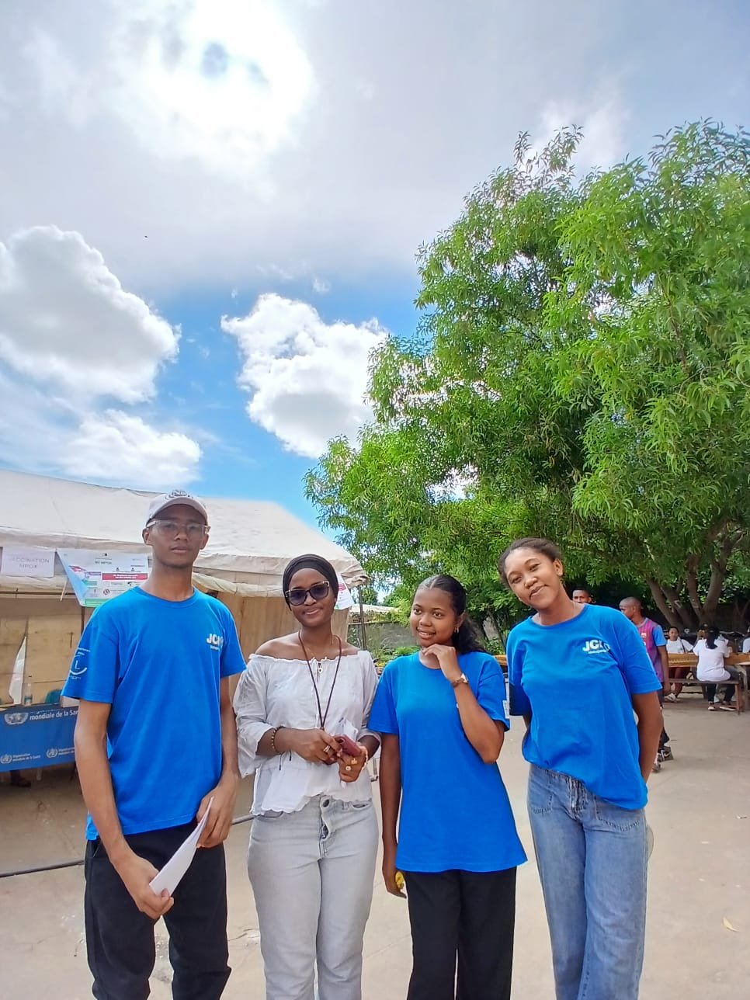

À propos du Projet
MedPreneur est un projet innovant d'entrepreneuriat dans le domaine de la santé, toujours en cours de développement sous l'organisation de la JCI Mahajanga. Ce projet représente un engagement fort envers l'innovation sociale et le développement de solutions entrepreneuriales pour améliorer l'accès aux services de santé en Madagascar.
Contexte & Justification
Madagascar fait face à des défis majeurs dans le secteur de la santé:
- Accès limité: Couverture inégale des services de santé dans les zones rurales
- Coûts élevés: Frais de santé prohibitifs pour une grande partie de la population
- Innovation insuffisante: Manque de solutions entrepreneuriales adaptées au contexte local
- Opportunités: Besoin urgent d'entrepreneurs créatifs pour adresser ces défis
MedPreneur vise à créer un écosystème d'innovation où les entrepreneurs peuvent développer des solutions viables pour le secteur de la santé.
Axes Stratégiques
Innovation
Développement de solutions créatives et technologiques pour la santé
Viabilité Commerciale
Modèles d'affaires durables et rentables
Impact Social
Amélioration concrète de l'accès aux services de santé
Ecosystème
Création d'un réseau de soutien pour les entrepreneurs de santé
Domaines d'Action
Telemédecine
Plateformes numériques pour la consultation à distance, démocratisant l'accès aux professionnels de santé.
Haute PrioritéProduits Santé Innovants
Développement de produits pharmaceutiques, dispositifs médicaux ou solutions de bien-être adaptés au contexte malgache.
Haute PrioritéServices de Santé Communautaire
Initiatives d'éducation sanitaire, prévention et services médicaux accessibles au niveau local.
Moyen TermeHealthTech
Applications mobiles, IoT médicaux et solutions analytiques pour améliorer les outcomes de santé.
InnovationMon Rôle en tant que Directeur
Je pilote le développement stratégique du projet MedPreneur avec les responsabilités suivantes:
Définition de la Vision
Articulation claire de la mission, des objectifs et de la direction stratégique du projet
Partenariats Stratégiques
Établissement de collaborations avec institutions de santé, incubateurs, investisseurs
Sélection d'Entrepreneurs
Identification et coaching d'entrepreneurs prometteurs dans le secteur de la santé
Ressources & Financement
Mobilisation des ressources, recherche de financement, gestion budgétaire
Suivi & Impact
Mesure de l'impact social et la viabilité commerciale des projets portés
Advocacy
Communication et sensibilisation sur l'importance de l'innovation en santé
Roadmap & Jalons
Lancement & Recrutement
Officialisation du projet, recrutement d'entrepreneurs initiaux, définition des critères de sélection
Incubation
Programme d'incubation intensif, coaching, accès aux ressources et mentorship
Accélération
Développement des projets pilotes, démonstration de viabilité commerciale
Scaling & Impact
Montée en charge, expansion géographique, mesure d'impact, attractivité d'investisseurs
Objectifs d'Impact
Entrepreneurs en santé soutenus
Solutions innovantes lancées
Bénéficiaires directs
Bénéficiaires potentiels
Vision à Long Terme
MedPreneur aspire à devenir le hub principal d'innovation en santé à Madagascar, catalyseur de changement pour une meilleure couverture et qualité des services de santé. Nous envisageons:
- Un écosystème florissant d'entrepreneurs de santé créant des solutions innovantes
- Des milliers de Malgaches avec accès amélioré à des services de santé de qualité
- Modèles d'affaires reproductibles et scalables au niveau régional
- Reconnaissance internationale de Madagascar comme centre d'innovation en santé
Mon Engagement: En tant que directeur du projet MedPreneur, je suis entièrement engagé à transformer cette vision en réalité concrète, créant un impact durable pour la santé et le bien-être des populations malgaches.